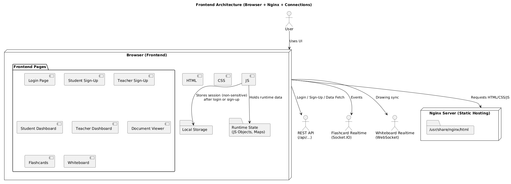

AuraLearn Cloud Web App
A Year 2, Trimester 1, 2025 Cloud and Distributed Computing project that proposed a cloud-based learning platform for MOE secondary students, combining document management, collaborative whiteboarding, flashcards, and cloud-native deployment for secure and scalable digital learning.

AuraLearn was designed as a cloud-based online learning platform for secondary students, positioned as a more centralized and interactive alternative to fragmented school workflows spread across multiple tools. The goal was to create a secure, paperless learning environment where teaching materials, student copies, whiteboards, and flashcards could live inside one coordinated platform.
The project followed a cloud-native structure rather than a single bundled app. The frontend was a multi-page HTML, CSS, and JavaScript web application, while the backend and realtime features were split across services for documents, flashcards, and collaborative whiteboarding. Firestore handled shared data and realtime synchronization, while cloud storage managed uploaded lesson materials, student copies, and exported files. Dockerized services were deployed on Cloud Run, with Firebase Hosting serving the static frontend globally.
One of the most important design decisions was the storage model. The platform separated school storage from personal student storage, then used backend-generated signed URLs so browsers could upload and fetch files without exposing direct storage access. That helped keep the system scalable while still letting the backend control placement, access, and metadata updates.
Problem and solution
- Addressed the lack of a centralized, engaging learning platform for secondary students, especially where materials were split across multiple systems.
- Proposed a private, collaborative, paperless platform that combined document management, whiteboards, and flashcards inside one cloud-backed workflow.
- Aligned the system to MOE-style digital learning by making the platform both interactive and operationally scalable rather than just a static file repository.
Architecture
- Built the frontend as a framework-free multi-page site using HTML, CSS, and JavaScript, with local storage and in-memory state managing client-side session and runtime behavior.
- Split the backend responsibilities across standard REST APIs, a whiteboard realtime server, and a flashcard realtime service rather than combining everything into one process.
- Used Firestore for shared state and realtime persistence, while cloud storage handled files and document assets under backend-controlled access rules.
Cloud storage flow
- Organized files by user and context, supporting school storage and private student storage within the wider learning platform.
- Used short-lived signed PUT URLs for uploads and signed read URLs for document access so browsers could transfer files without direct open storage access.
- Handled document sharing through backend-controlled copy operations, which helped preserve isolation between shared school materials and student-owned copies.
My contribution
- Handled the frontend flow and frontend-to-backend connection for login, dashboards, document actions, and the signed-URL upload pipeline.
- Built and structured the cloud storage bucket workflow, including the storage layout, upload/view signed-URL flow, and atomic copy handling for student files.
- Worked on the secure and modular side of the system, making sure storage operations were routed through the backend rather than exposed directly to the client.
Realtime and collaboration
- The whiteboard feature used WebSockets plus Firestore-backed persistence so multiple users could draw collaboratively in the same document room.
- The flashcard feature used a hybrid model, with REST for CRUD and Socket.IO for real-time competition and synchronized state updates.
- The overall service split helped keep the collaboration features isolated, which made scaling and cost behavior easier to reason about.
Cloud deployment and evaluation
- The report describes containerized deployment using Docker, cloud-hosted services, and scale-to-zero behavior to control cost when the system was idle.
- Cloud evaluation focused on instance counts, latency, CPU usage, and per-service performance rather than only feature completeness.
- The architecture aimed for separation, reproducibility, and fault containment so frontend, whiteboard, flashcards, and backend operations could evolve more independently.
Tools and concepts
Project material
This page is based on the final cloud report, including the architecture, implementation, evaluation, and conclusion sections.